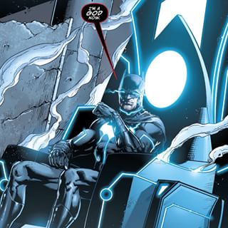

'Evening the Odds'
Growing up as a typical '90s Kid I watched a lot of Cartoons and loved Comics . Cartoons that aired during those days were more mature and had a good storyline , it was a movie for kids . My favourite cartoons were Pokémon(Anime) , Superman : The Animated Series , Batman: The Animated Series , JLA etc . Eventhough I liked Superman initially he was overpowered , a God . Growing up I found Batman more interesting . A human overpowering superheroes , that's gotta be impressive and I liked the dark theme .
My first Action Figure was Batman in a red suit and yellow gauntlet . Batman is such an inspiring character and being voiced over by Kevin Conroy made him so cool . The reason I had to include Batman here is because he is a huge inspiration / motivation .
Comics
It's Obvious that Batman is my favourite Comic character . The reason being the other characters and the dark plot the comic revolved around . The other Characters in the comic that I'm fond of are Mxyzptlk , Batmite , Joker , Azrael . The DC issue of Batman that I loved the most is The Batman Strikes! : Issue #1 - 50 and I hate The Deal , though it's a fan fiction , come on you made Batman and Joker gay :/ .
More Interestingly I found Batman's appearance on JLA more intriguing . The plot where he destroys the entire Justice League and the plot where he brings down Superman after he goes berzerk are some of the good ones .
"Legends Live on , Only Man comes to an End" .
More Interestingly I found Batman's appearance on JLA more intriguing . The plot where he destroys the entire Justice League and the plot where he brings down Superman after he goes berzerk are some of the good ones .
-Batman

Gaming
It took me a while but I discovered the Batman Game on my Nintendo DS 1000 in 1 games Catridge . However I spent less time on Batman with Nintento . It was once the Batman: Arkham Series was launched I really got into the game . That's one thing about gaming , you don't just play as the character , you live the character .
My fondest memories of Batman: Arkham are the Boss fights , Cut Scenes and the Final Episodes of the Storyline , the hype is real ! .
Being one of the most advanced games with the most advanced graphical support , when Rocksteady Studios moved from Unreal 3 to Unreal 4 not much changed but the gameplay was freakin' awesome . Awaiting the Batman - VR !
My fondest memories of Batman: Arkham are the Boss fights , Cut Scenes and the Final Episodes of the Storyline , the hype is real ! .
Being one of the most advanced games with the most advanced graphical support , when Rocksteady Studios moved from Unreal 3 to Unreal 4 not much changed but the gameplay was freakin' awesome . Awaiting the Batman - VR !